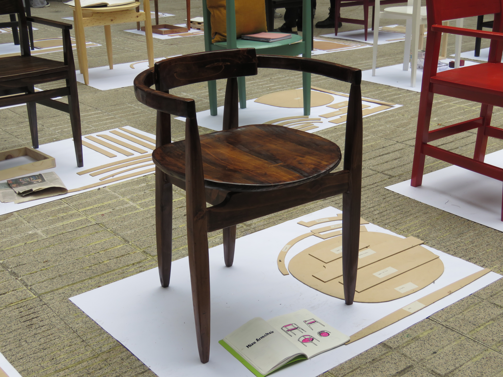
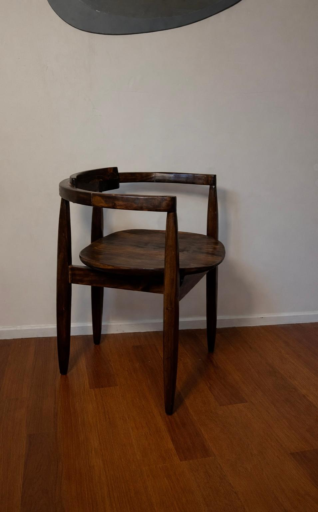
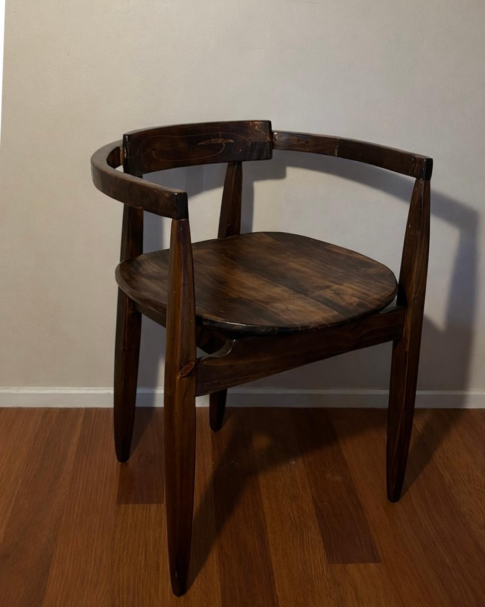

03 / 08
Silla de madera
Réplica de la Miau Chair, realizada a partir de un ejercicio de observación y reconstrucción. La silla fue asignada al azar y, a partir de su observación, se debieron deducir sus dimensiones, proporciones y formas para desarrollar una reproducción de su estructura original.
Para su construcción, primero se realizaron plantillas en AutoCAD, que fueron impresas y traspasadas a MDF para utilizarlas como moldes. Luego, se cortaron las piezas y se transfirieron sus formas a distintos listones y piezas de madera. Estas fueron ensambladas mediante adhesivo para madera, dando forma a las distintas partes de la silla. Finalmente, se lijó y pulió la superficie, aplicando un tinte para madera y una capa de barniz transparente de acabado poco brillante para proteger y dar terminación a la pieza.


